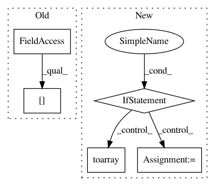

ca78010feee2c809ac08efbf0417a057206deb18,scanpy/get.py,,obs_df,#,67
Before Change
df[k] = adata.obs_vector(l, layer=layer)
for k, idx in obsm_keys:
added_k = f"{k}-{idx}"
if isinstance(adata.obsm[k], (np.ndarray, sparse.csr_matrix)):
df[added_k] = np.ravel(adata.obsm[k][:, idx])
elif isinstance(adata.obsm[k], pd.DataFrame):
df[added_k] = adata.obsm[k].loc[:, idx]
After Change
val = adata.obsm[k]
if isinstance(val, np.ndarray):
df[added_k] = np.ravel(val[:, idx])
elif isinstance(val, spmatrix):
df[added_k] = np.ravel(val[:, idx].toarray())
elif isinstance(val, pd.DataFrame):
df[added_k] = val.loc[:, idx]
return df
def var_df(
In pattern: SUPERPATTERN
Frequency: 3
Non-data size: 5
Instances
Project Name: theislab/scanpy
Commit Name: ca78010feee2c809ac08efbf0417a057206deb18
Time: 2019-06-26
Author: ivirshup@gmail.com
File Name: scanpy/get.py
Class Name:
Method Name: obs_df
Project Name: theislab/scanpy
Commit Name: ca78010feee2c809ac08efbf0417a057206deb18
Time: 2019-06-26
Author: ivirshup@gmail.com
File Name: scanpy/get.py
Class Name:
Method Name: obs_df
Project Name: theislab/scanpy
Commit Name: ca78010feee2c809ac08efbf0417a057206deb18
Time: 2019-06-26
Author: ivirshup@gmail.com
File Name: scanpy/get.py
Class Name:
Method Name: var_df
Project Name: scipy/scipy
Commit Name: 2344e4105a44fa929aa6fb82597c2ac81bef5171
Time: 2014-02-21
Author: pav@iki.fi
File Name: scipy/sparse/linalg/dsolve/linsolve.py
Class Name:
Method Name: spsolve